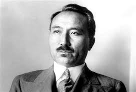

Тағы бір ақбас бура, - емес атан, Жүріпті Көкшетауды қылып Отан. Мұны да "көзі көрген" қартайтады, Тыңдаған әлеуметке алқа-қотан. Тағы екен жанға ұстатпай жүрген қашып. Күркіреп тұрады екен көбік шашып, Бір көлді мекен қылып күнде келіп, Су ішіп кетеді екен алшаң басып. Дүниеде әрбір бөлек жердің аты, Себеппен қойған бәрі елдің аты Бурабай атаныпты содан бері Ақ бура мекен қылған көлдің аты. Мөп-мөлдір Бурабайдың суы күміс, Көргенде шаршаған жан алар тыныс. Мінбелеп қоршалаған шымылдықтай, Қарағай, қайың менен қалың жыныс. Ақ көбік көпіреді күміс судан, Сан сұлу сол көбікпен бетін жуған Көл басы бірде күңкіл бірде у-шу, Әңгіме сансыз сырлы ертек туған. Ақ бура көп жыл тауды қылған мекен, "Бір үлкен іс боларда сезеді екен". Ол істі елге айтқандай маңайдағы. Бақсыдай тауды азынап кезеді екен... Шабысып бірін-бірі ел қуар болса, Не өлмек, не бір батыр туар болса, Немесе бір апатқа ел ұшырап, Кәрі-жас бетін жаспен жуар болса. Бақсыдай бура азынап жүреді екен, Мал шулап, иттер ұлып үреді екен. Қалың ел маңайдағы құрбан шалып, Құлақты алдағы іске түреді екен. Қара бұлт тауды төніп басады екен, Күркіреп жерге зәрін шашады екен. Аспаннан қып-қызыл от жерге шашып, Таудағы аң пана таппай сасады екен. Білген соң бураның бұл қасиетін, Үлкеннің кіші тыңдап өсиетін. Түнеріп долы бұлттай күрілдіген Бураға болмапты енді жұрт тиетін. Баласы Абылайдың Қасым төре, Жасынан сотқарлығы басым төре. Бір күні тау ішінде келе жатты Өзіндей бір топ жігіт қасында ере. Бәрінің асынғаны қару-жарақ, Соқтыққан өңкей сотқар жалақ-жалақ. Найзамен неше түрлі ат үстінде Ойын ғып келе жаткан көлді жанап. Тастарды, ағаштарды қылып қарақ, Ысқыртып келе жатқан өткір садақ. Бураны Қасым төре сөз қылыпты, Кез келсе атпақ болып төстен қадап. Қасым хан туғаннан-ақ қанға құмар, Дірілдеп өлім күткен жанға құмар. Анадан қан уыстап туған мұндар, Қан ұрттап жүрсе ғана көңілі тынар. Сол кезде шыға кепті ақбас бура, Жап-жалбыр төсін басқан әппақ шуда. Қасым хан тұра қалып ақ бураны, Шіреніп атып сапты нақтап тура. Өкіріп ақбас бура көбік шашып, Шиқылдап тісін қайрап, аузын ашып. Қасымды бір айналып бура-қотан, Қан ағып кеткен тулап таудан асып. Бақсыдай сарнап бура тауды кезген, Күңіреніп мекенінен енді безген. Ел естіп хан ұлының бұл жұмысын Зор іске ұшырарын бәрі сезген. Жоқ болып ақбас бура көп күн өткен, (Қасымның қан қолынан қаза жеткен.) Бір күні таудай болып шөгіп жатқан Бураны жұрт көреді өткен, кеткен. Құбылаға басын беріп шөгіп жатқан, Көк мұнар қалың ойға шомып батқан, Ақ бура қабақтарын қарс жауып, Қозгалмай мәңгі жатып тас боп қатқан. Ақ бура таудың тағы түйесі деп. О-дағы қасиетті бір иесі деп, Тұқымы сотқар ханның оңбағаны. Жұрт айтад "сол түйенің киесі" деп. "Бұл іске Бурабайдың көлі куә, Қасымның қалған жұрты, көңі куә, Бураша шөгіп жатқан мұнар тау мен ЬІзыңдап таудың соққан желі куә..."